DE AFDELING
Outside my study I ran a student bar, from january 2024 till january 2026, together with a team of driven students from all different disciplines. During this time my task was to change and refresh Café de Afdeling’s visual identity and setup a ‘design system’ for future students so they a standard to work with.
As Promotions, I introduced and shaped the role yourself, giving the bar a unified and evolving visual identity. I managed both digital (social media and online marketing) and physical (posters, cover art and flyers) promotions, ensuring the bar remains professional, relevant, and vibrant.
I emphasized inclusivity in all communications—making the bar’s identity open, welcoming, and accessible, while also protecting it as a neutral space free of divisive or alienating messages.
- 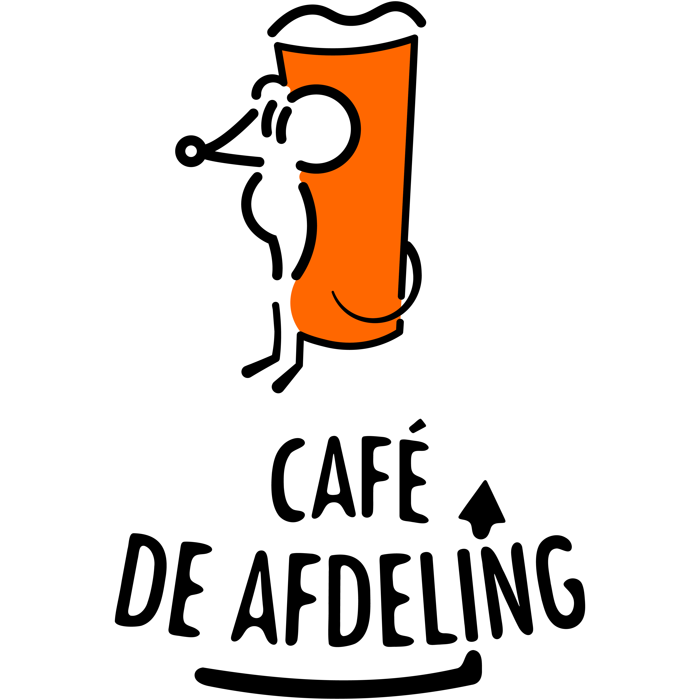

- 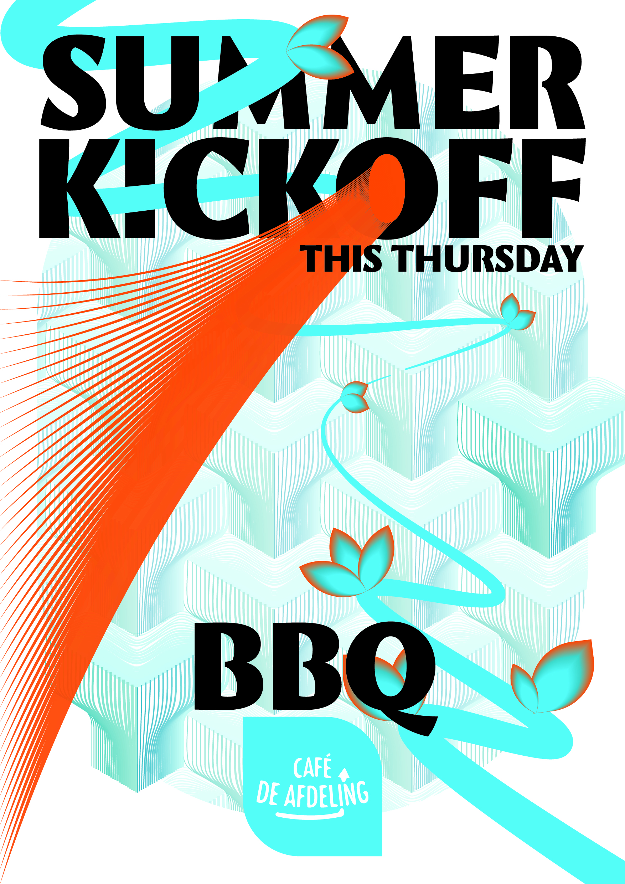


- 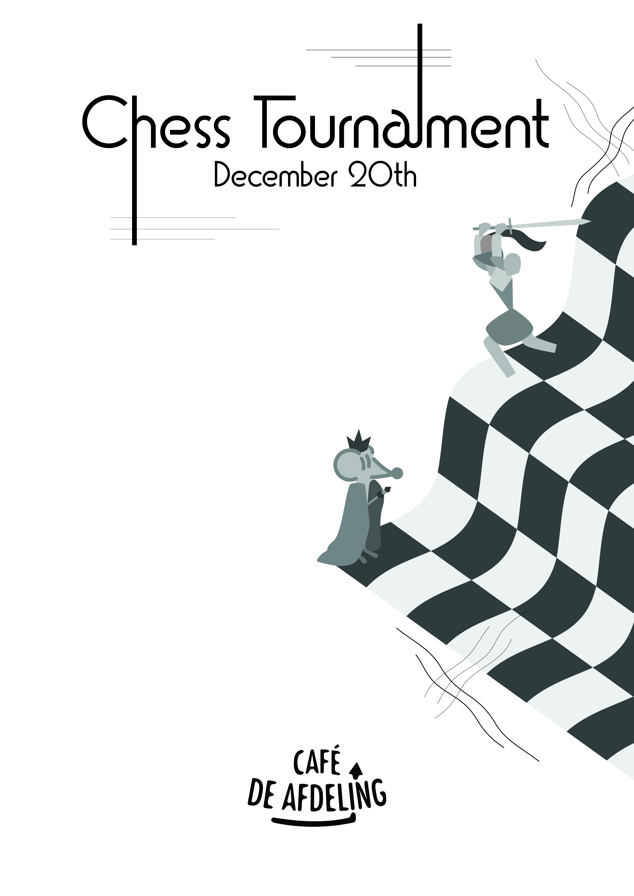
- 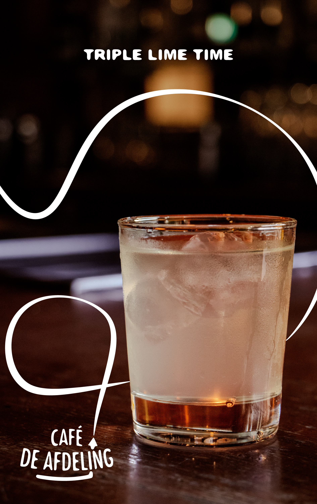
- 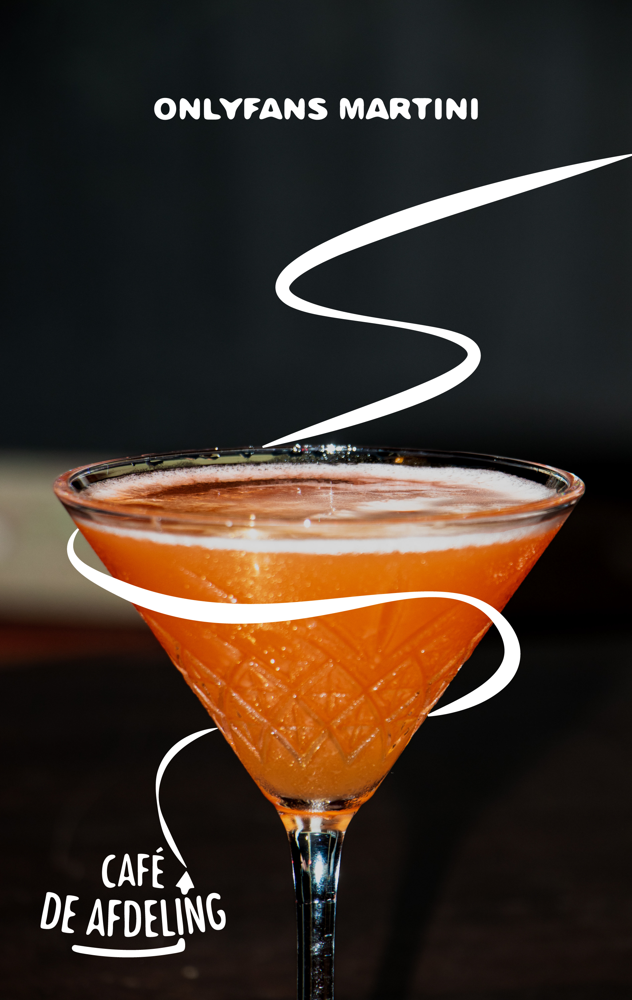


Scroll right to see more images...
- Organized & Reliable → keeping communication structured and efficient.
- Creative and Cohesive → crafting and evolving a cohesive brand identity.
- Initiative-Taker → creating the Promotions role and shaping its importance.
- Community-Minded → seeing the bar as a living, breathing hub that adapts with its people.
- Inclusive & Responsible → ensuring designs and messages are welcoming to all.
- Professional & Consistent → balancing creativity with clarity and reliability.
WHOPPAH
In my studies of Communication & Multimedia Design (CMD), the focus lies in creating digital interfaces while keeping the user experience central in every outcome.
Within the Commercial Design course, I worked on a project for Whoppah, a company specializing in repurposed furniture. My task was to analyze and design improvements to Whoppah’s website with a commercial mindset, focusing on the buyer persona and how design choices influence purchasing behavior. I presented my findings and design proposals directly to Whoppah’s marketing team, combining both creative and commercial perspectives.
- 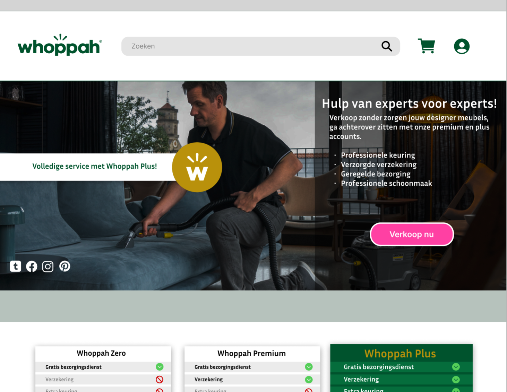
- 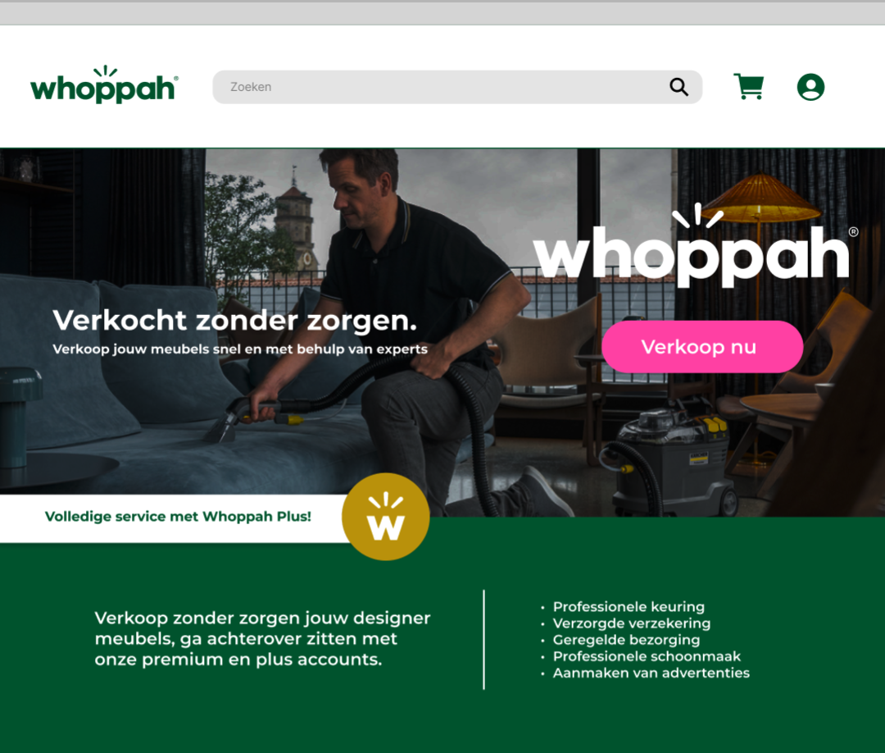
- 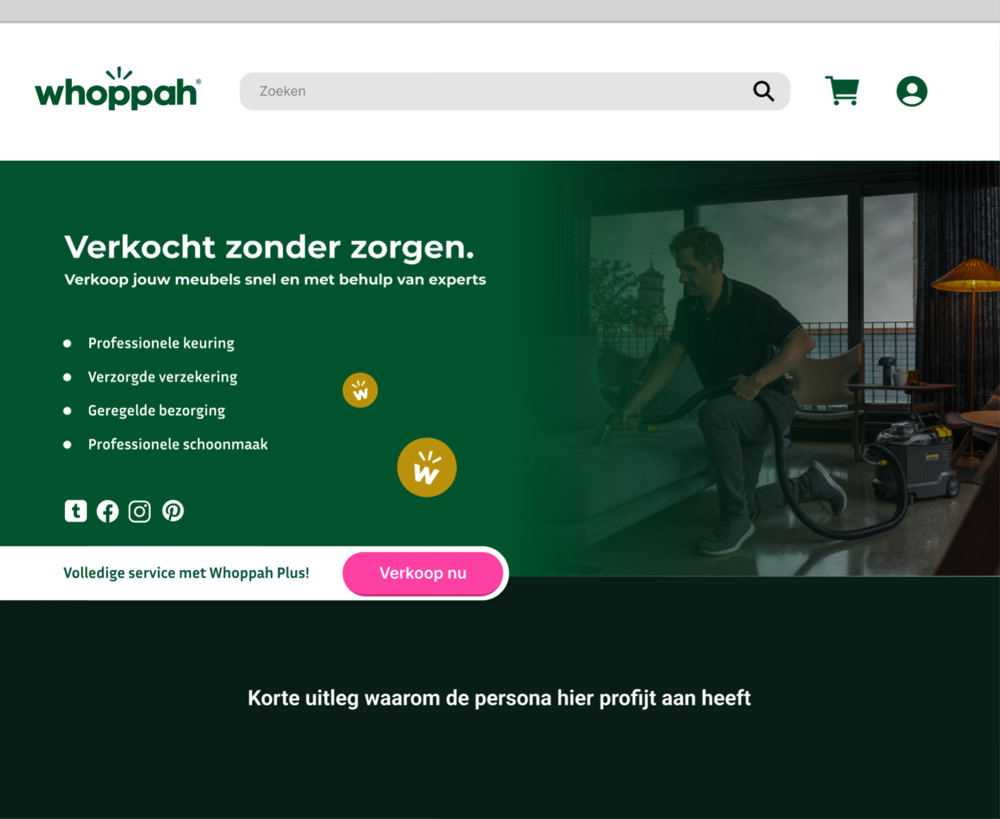
- 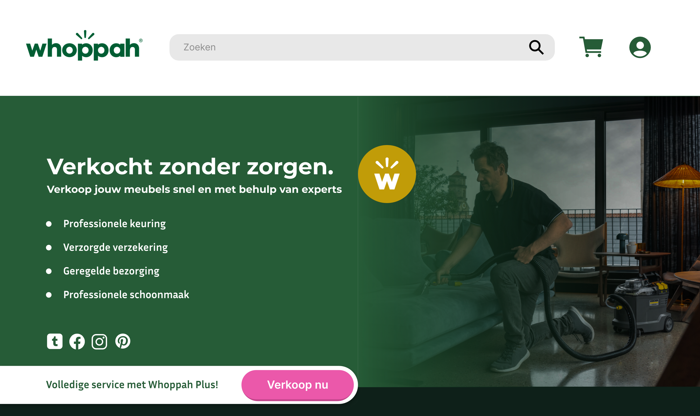
- 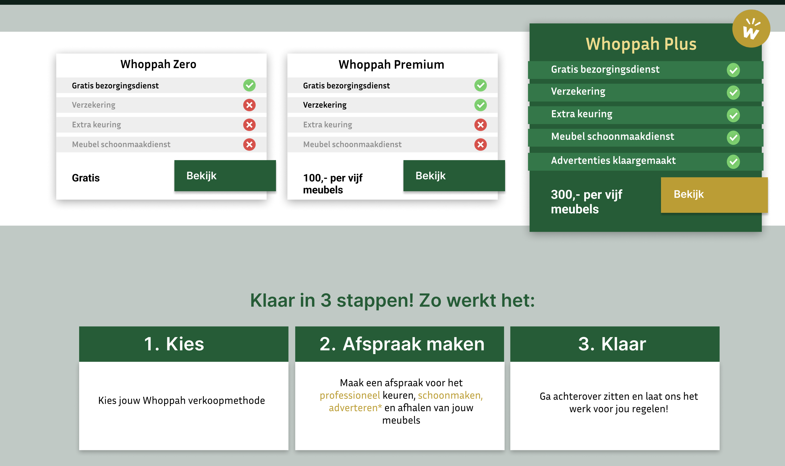
- 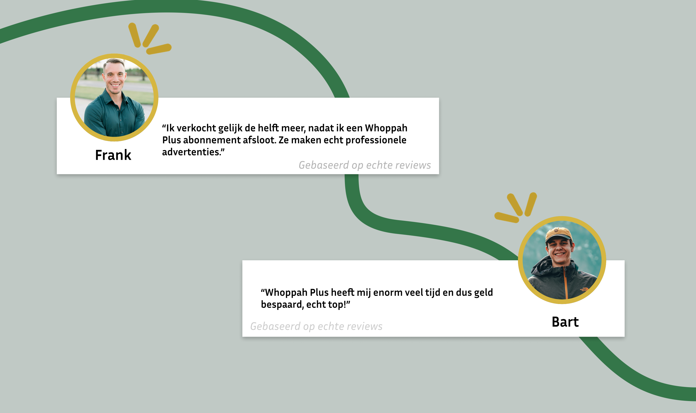
- 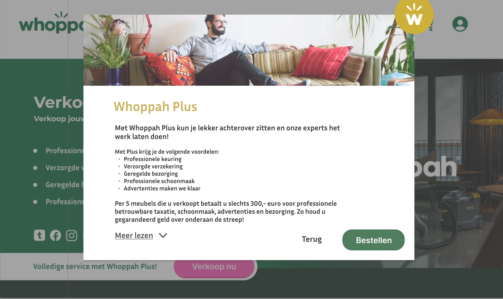
- 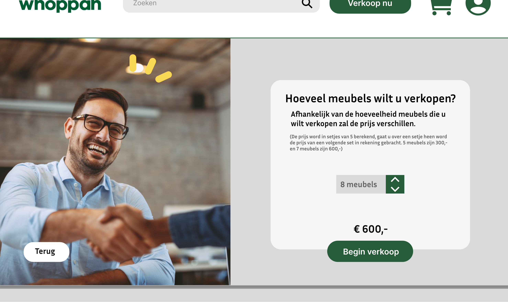
- 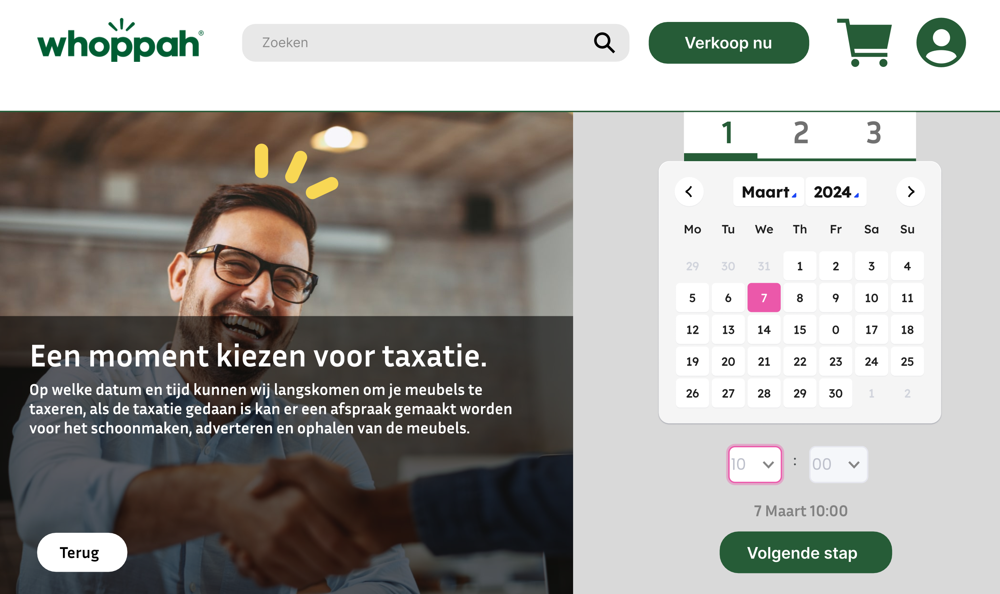
- 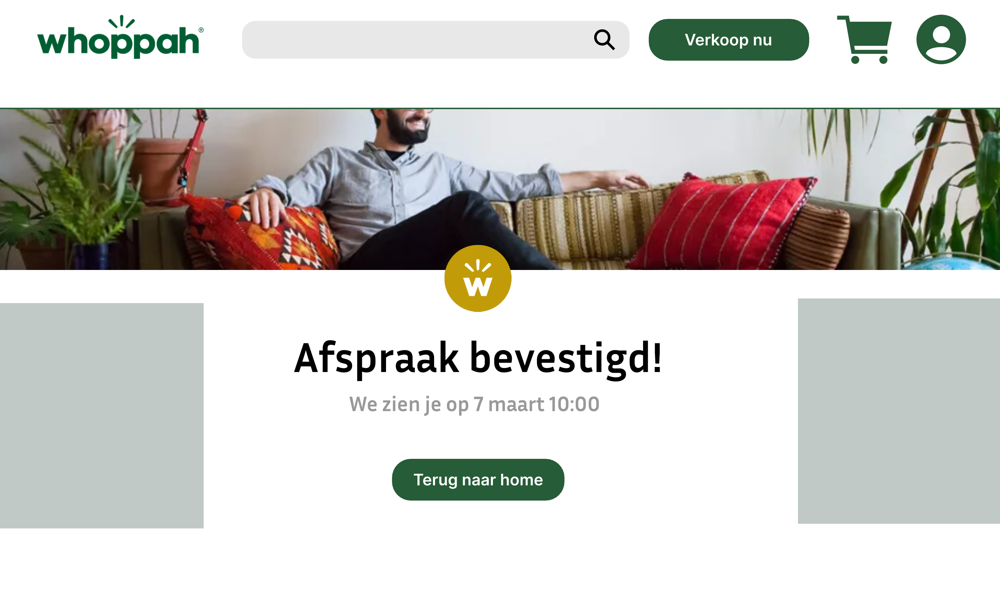
Scroll right to see more images...
- User-Centered → always designing with the end-user and buyer persona in mind.
- Analytical → translating research insights into concrete design decisions.
- Commercially Aware → understanding how design impacts marketing and sales.
- Creative Problem-Solver → finding ways to enhance both function and appeal of the website.
- Professional Communicator → presenting ideas to stakeholders with clarity and confidence.
NOTICING WATER
During your Minor in Creative Research, I explored a wide range of research methods, both established and self-developed, applying them to different topics.
I gained experience working individually and in teams, adapting my approach depending on the project’s needs. I also hosted research workshops, participatory workshops and interviews, creating networks where sharing methods and insights with others in interactive ways is the fruit. A key part of my development was designing my own creative research methods, which encouraged experimentation, reflection, and innovation.
Withing Carlo DeGaetano's research "Noticing Water" he invited me and my team to create our own workshop where we could combine research methods and add on to his existing research. For this participatory workshop I created an Immersive Experience, within HvA's Immersive Lab, where the participants can notice the research in a 360 degrees projected space.


Scroll right to see more images...
- Curious & Explorative → approaching topics with an open, investigative mindset.
- Methodical & Inventive → creating and applying new research methods creatively.
- Collaborative → able to work effectively both in groups and independently.
- Facilitator → leading and hosting workshops that engage others in research.
- Adaptive → applying methods flexibly to different themes and challenges.
- Reflective Practitioner → using research not only for outcomes but for deeper understanding.
GITANOS BLYNAI
Gitanos Blynai is a beloved family-owned crêperie in Lithuania, recognized locally and awarded as one of the best family-run businesses in their town.
I was tasked with designing their menu, not only as a functional piece but as a reflection of their identity—community spirit, family values, and quality. To strengthen this identity, I engaged with the young art students working at the crêperie, inviting them to illustrate the town in their own unique styles. By incorporating their artwork into the menu design, the result celebrated both the business’s connection to its community and its role in giving students their first side jobs. The menu needed to be more than a list of dishes—it needed to tell the story of the town, the family, and the people who bring the place to life.


Scroll right to see more images...
- Identity-Driven Designer → capturing the essence of a place and community in design.
- Empathetic & Engaged → listening to the people involved and integrating their voices.
- Community-Oriented → weaving local culture and relationships into creative outcomes.
- Collaborative → involving students and stakeholders in the creative process.
- Storytelling through Design → turning a practical object into a narrative experience.
- Culturally Sensitive → respecting and amplifying the uniqueness of a family-owned business.
ESI TANALA
As part of my Immersive Environments minor, I created an individual project for the exhibition titled “Esi Tanala” (They Who Gaze).
The work grew out of a lifelong, very personal research into the intergenerational trauma of the Moluccan people in the Netherlands. My goal was to express a pain I carry within myself and translate it into an experience others could feel as well. I told my supervisor: “I want to express this feeling that makes me cry, and I want it to make at least someone else cry.”
To build the concept, I gathered archival materials such as images of Moluccan protests, the arrival of Moluccan people, and other fragments of cultural memory. My cousin, who studies Asilulu (an almost forgotten old Moluccan language), helped me with my research and came up with the title Esi Tanala. This gave me the idea to create a somewhat silent projection piece, where I projected my family on a white backdrop, gazing directly into the eyes of the audience. The final work became an intimate, confronting moment of shared gazes—an invitation to witness memory, grief, and resilience through silence.


Scroll right to see more images...
- Deeply Reflective → I turn personal and cultural pain into creative expression.
- Emotionally Powerful Storytelling → I aim to create work that makes others truly feel.
- Research-Driven → I ground my concepts in historical and cultural materials.
- Culturally Rooted → I integrate language and heritage into my artistic practice.
- Conceptual & Immersive → I use projection and atmosphere to craft silent but intense dialogue.
- Courageous → I address vulnerable and sensitive themes in a public artistic setting.
REFRESH MEDIA
For about 3–4 months, I worked at Refresh Media as an intern, a small but long-established company, where I contributed to designing UX websites, web applications, UIs, and visuals.
During this time, I learned to create simple website layouts with Elementor (a WordPress web application) that Refresh Media could quickly adapt for their clients. I also worked in Adobe XD (UX design) to help design pages within larger web applications built for big businesses, focusing on their specific professional needs.
Beyond client projects, I also contributed to renewing Refresh Media’s own identity—by creating illustrations, icons, and even a new logo concept. The company had been around for a long time, and I felt they could use a fresh perspective in how they presented themselves. Interestingly, about half a year after my internship ended, the owner messaged me to share their new website. To my surprise, they had also updated their logo—not exactly my design, but similar in spirit


Scroll right to see more images...
- Practical Designer → I create layouts and designs that are both functional and easy to implement.
- Versatile → I worked across UX, UI, web design, and visual identity.
- Efficient → I adapted tools like Elementor to streamline workflows for client projects.
- Professional Insight → I contributed to both client-facing work and the company’s internal brand renewal.
- Creative Influence → My ideas left a lasting impression, even after the internship ended.
- Adaptive Learner → I quickly picked up new tools and methods within a professional setting.
SKETCHNOTING
I learned sketchnoting during my studies at CMD HvA. It was encouraged as a trait: sketching in between writing down things in lectures or seminars.
For example in Design History classes, I often sketched away, using visuals to capture ideas, connections, and emotions that purely text-based notes didn’t convey. Through doing this, I developed not just a habit, but also an awareness of how combining sketches, diagrams, icons, and keywords can make information more memorable, more engaging, and more personally meaningful.
- What is sketchnoting: It’s visual note taking: using sketches, symbols, structures, text to record thoughts in a creative way, not just copying what’s heard.
- Improved comprehension & memory: The combination of words + visuals engages more areas of the brain, making it easier to recall information and understand relationships between concepts.
- Greater focus & engagement: Sketchnoting forces active listening: you have to pick out what’s important, decide what to visualise, and pay attention so you don’t miss the flow of a lecture. This reduces distractions.
- Encouraging creativity & personal style: Since you don’t have to be “good at drawing,” you can develop your own style of icons, layouts, structures. Over time, you build a “visual vocabulary.”
- Structure and clarity: Best practices include using a hierarchy (titles → sub-points), using containers, connectors (arrows, boxes), icons, consistent typography, and limited color palettes to highlight, so that notes are easy to scan later.